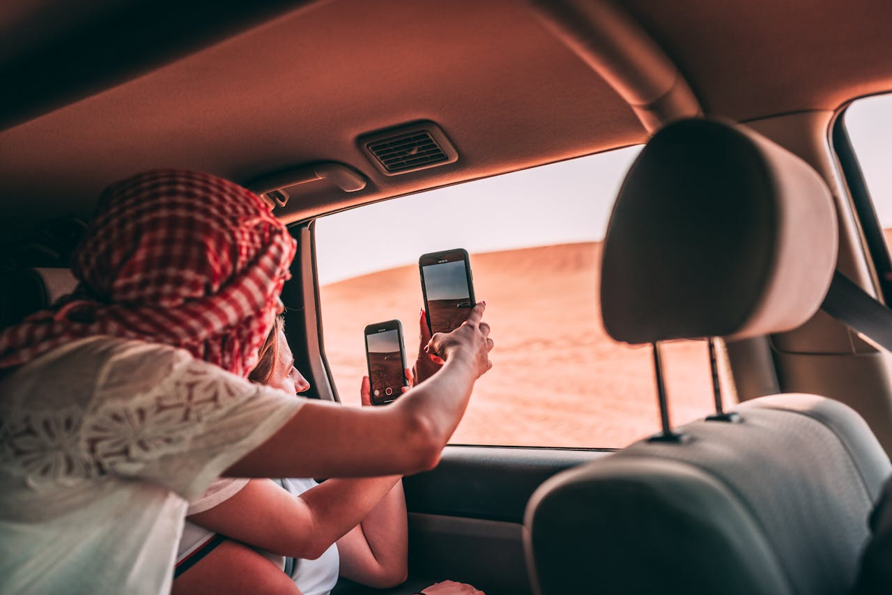

Where Minimalism Meets Travel: The Best Places to Go Light
Minimalist travel isn’t just about packing light — it’s also about choosing destinations that support a simpler, more intentional way of exploring. From walkable cities to countries with efficient public transport and serene landscapes, some places are naturally aligned with the minimalist ethos. Here’s a curated guide to countries and cities where traveling light is both practical and inspiring.
1. Japan
Japan exemplifies minimalist living with its clean design, efficient systems, and respect for space. Cities like Kyoto and Kanazawa offer serene gardens, tranquil temples, and cultural depth without overwhelming crowds. Trains are punctual, accommodations like capsule hotels support minimalist lodging, and convenience stores are surprisingly well-equipped for everyday needs.
Minimalist-friendly Cities in Japan:
- Kyoto: Traditional ryokans, walkable districts, and a calm pace.
- Nara: Nature, deer parks, and accessible cultural heritage.
- Kamakura: Coastal Zen with historic temples and beaches.
2. Portugal
Portugal’s compact cities and stunning coastlines make it a favorite for light travelers. Lisbon’s trams, Porto’s walkable riverfront, and the laid-back Algarve region mean you can explore deeply without heavy gear. The warm climate makes minimalist wardrobes easy, and public transport is both affordable and reliable.
Top Cities in Portugal:
- Lisbon: Scenic viewpoints, tiled streets, and small accommodations.
- Porto: Cozy cafes, historic neighborhoods, and efficient metro access.
- Faro: Gateway to the Algarve with stunning coastal walks.
3. Georgia (The Country)
With its stunning mountains, hospitable locals, and inexpensive cost of living, Georgia (in the Caucasus) is perfect for minimalists. You can travel with a backpack, hop on marshrutkas (minibuses), and stay in family-run guesthouses while enjoying some of the world's most underrated nature.
Don’t Miss:
- Tbilisi: Vibrant, artistic, and budget-friendly.
- Kazbegi: Breathtaking mountain scenery with minimal fuss.
- Batumi: Black Sea calm and casual city life.
4. Slovenia
Small, green, and full of charm, Slovenia is a dream for slow, simple travel. Public transportation covers much of the country, and everything from Lake Bled to Ljubljana’s car-free center promotes a stress-free experience.
Recommended Spots:
- Ljubljana: A capital city designed for pedestrians and bicycles.
- Lake Bled: A fairytale destination that requires only your camera and walking shoes.
- Triglav National Park: Light hiking with incredible alpine views.
5. New Zealand
For adventure minimalists, New Zealand offers everything from volcanoes to fjords. Traveling by camper van or just with a hiking pack, you can immerse yourself in pure nature. Free or low-cost DOC (Department of Conservation) campsites make it possible to explore on a minimal budget with minimal gear.
Ideal Regions:
- South Island: Home to Queenstown, Milford Sound, and endless trails.
- Northland: Peaceful bays, forests, and remote beaches.
6. The Netherlands
The Netherlands offers a bike-first lifestyle, efficient trains, and compact cities with minimalist design and mindset. It’s easy to travel with just a backpack while experiencing both culture and calm.
Must-Visit Cities:
- Utrecht: Like Amsterdam but quieter and more intimate.
- Leiden: Canals, history, and relaxed university town vibes.
- Rotterdam: Modern architecture with a sleek, minimal feel.
Tips for Choosing a Minimalist Destination
When choosing where to go, look for places with:
- Good public transport infrastructure
- Compact urban design or walkable neighborhoods
- Stable climate that allows lighter packing
- Access to nature or quiet zones
- Local culture that values simplicity, sustainability, or slowness

Disclaimer: This photo is shared for informational and educational purposes only. All rights to the original author are reserved.
Conclusion: Go Where Lightness Leads
Minimalist travel is enhanced when your destination supports simplicity. Whether you're cycling through Dutch towns or hiking through Georgian peaks, the best places for minimalist travel make it easy to carry less and live more. Choose wisely, and let the journey be as light as your luggage.